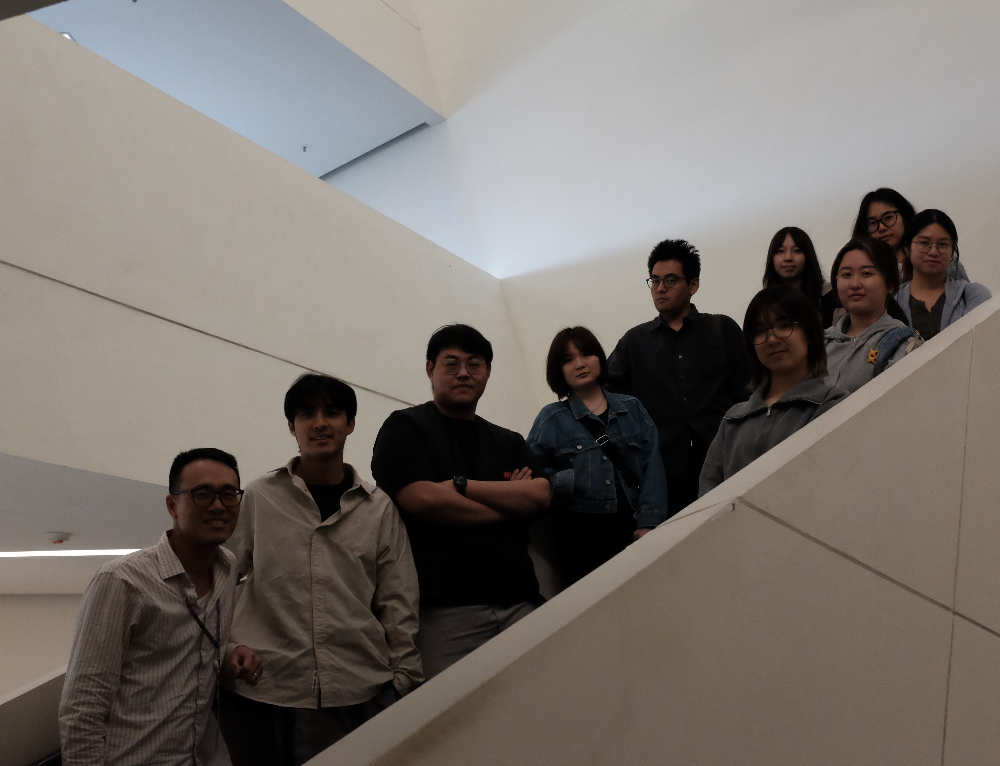
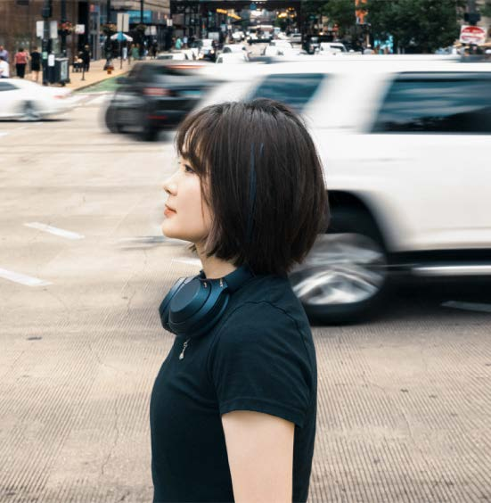
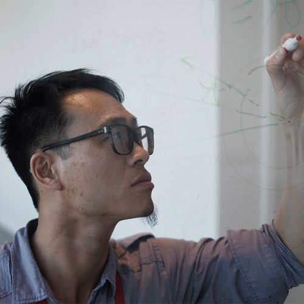

Studio for Narrative Spaces
Studio for Narrative Spaces curated the exhibition and shaped its focus on speculative climate futures, technology, and expanded narrative environments.
The exhibition is curated by Studio for Narrative Spaces in collaboration with the Korean Cultural Center in Hong Kong.

Studio for Narrative Spaces curated the exhibition and shaped its focus on speculative climate futures, technology, and expanded narrative environments.

Star Sijia Liu is a curator, creator, and PhD student working across narrative spaces, speculative futures, immersive media, and cultural research.

RAY LC is an assistant professor and curator whose work connects speculative systems, experimental research, and public-facing cultural programs around climate, urban life, and collective imagination.
Fangge Zhang works across curatorial research, cultural exchange, and art-technology contexts, supporting the exhibition's dialogue between Korean media artists and Hong Kong creative communities.
Bowen Liu is a full-time research assistant and artist working at the intersection of generative AI, cultural heritage, and human perception, currently at City University of Hong Kong.
Mannie has worked as a drama-in-education facilitator, and has experience curating exhibitions and managing a gallery.

The Korean Cultural Center in Hong Kong presents Korean culture through exhibitions, programs, and cultural exchange. This exhibition takes place at G-7/F, Block B, PMQ, 35 Aberdeen Street, Central, Hong Kong.